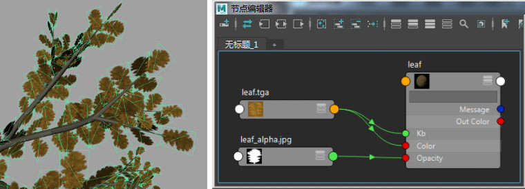
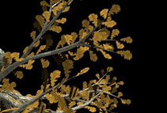
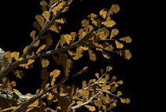
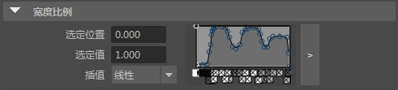
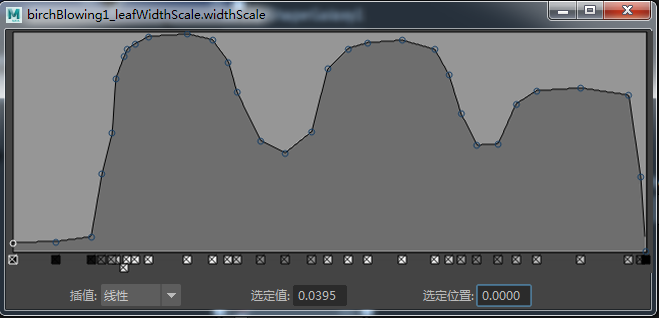
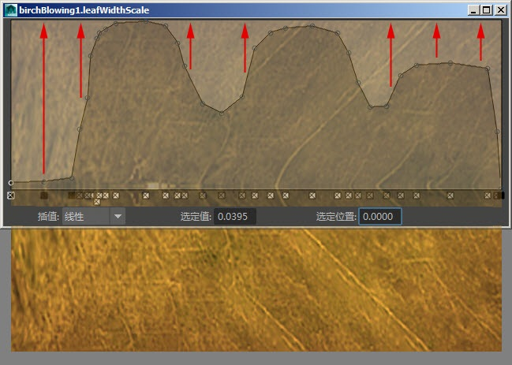
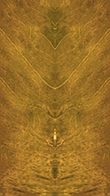
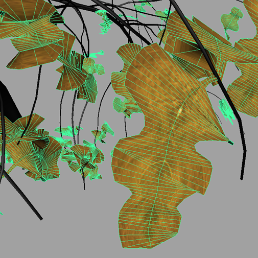

本教程旨在演示一些在使用 Arnold 渲染树叶时可用来缩短渲染时间的工作流。在本示例中，我们将使用一个已转化为多边形的 Maya Paint Effects 场景。但是，这些方法也可应用于涉及不透明贴图的其他类型的几何体。
| 要下载对应的场景，请单击此处。 |
|---|
不透明度*的典型工作流是将 Alpha 遮罩连接到 *standard_surface 着色器的不透明度属性。

Alpha 贴图连接到 standard_surface.opacity 的叶
要加快叶的渲染速度，一种方法是使用 ray_switch 节点。ray_switch 为我们提供了更大的灵活性，让我们可以只包含和排除想要渲染的光线。在这种情况下，我们不需要包含每片叶的每个着色方面。一种工作流方法是：
这样，将只计算摄影机光线和漫反射*光线（使用简单的漫反射 *standard_surface 着色器），从而缩短渲染时间：
|  |  |
| ray_switch：1 分 3 秒 | 无 ray_switch：1 分 48 秒 |
| 无 ray_switch：15 分 47 秒 | ray_switch：6 分 40 秒 |
在 Paint Effects 中，有一种解决方法可以一并避免不透明度的问题。由于解决问题的思路是不使用任何基于纹理的透明度，因此宽度比例将决定叶的形状。我们可以将纹理想象成“宽度比例”形状的一个颠倒的封套或晶格变形（一半树叶形状/一半纹理）。
下面是所涉及的工作流的一个示例：



将修改的叶纹理连接到一个 standard_surface 着色器，然后将它指定给叶几何体。
将 Paint Effects 笔刷转化为多边形，并为其指定 standard_surface 着色器。

修改的叶纹理被指定给修改了“叶宽度比例”(Leaf Width Scale)的叶几何体
非常感谢 Jonathan Richter 为本教程提供的帮助。